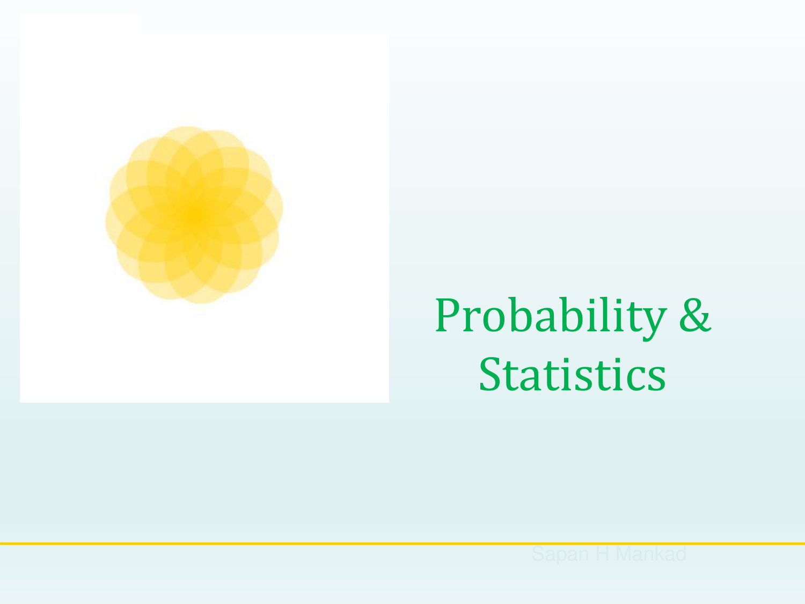
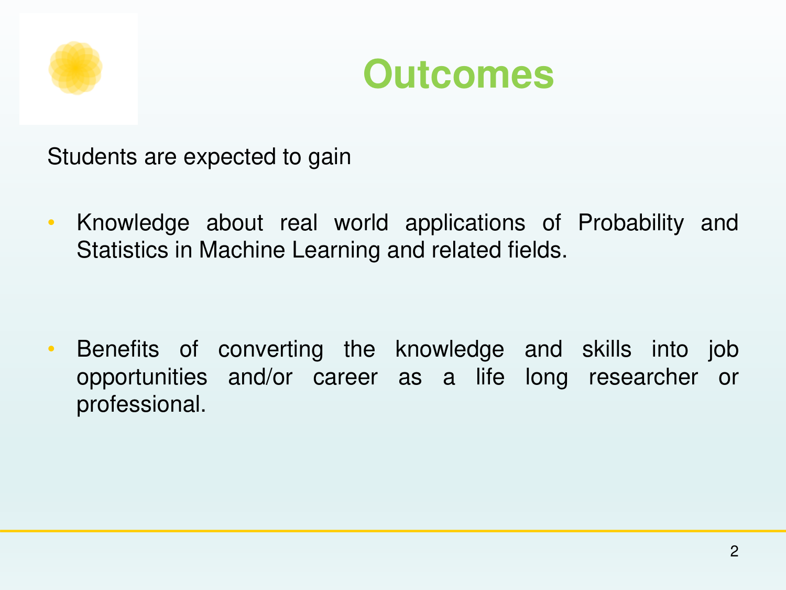
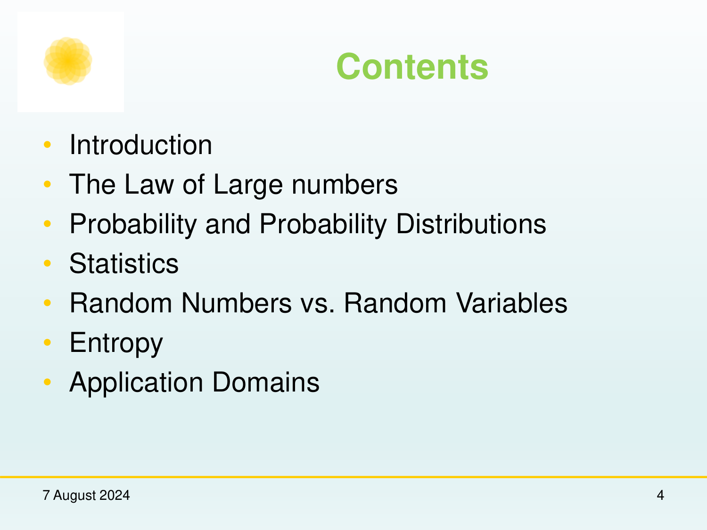
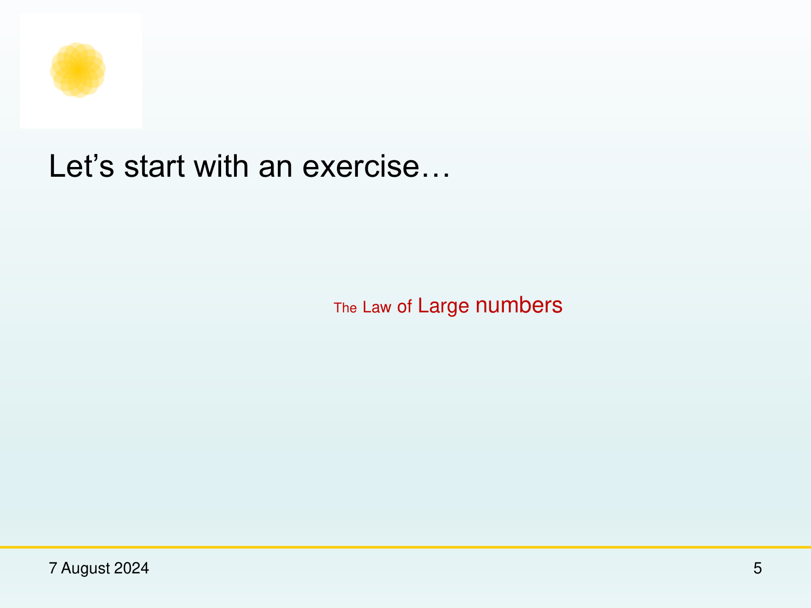
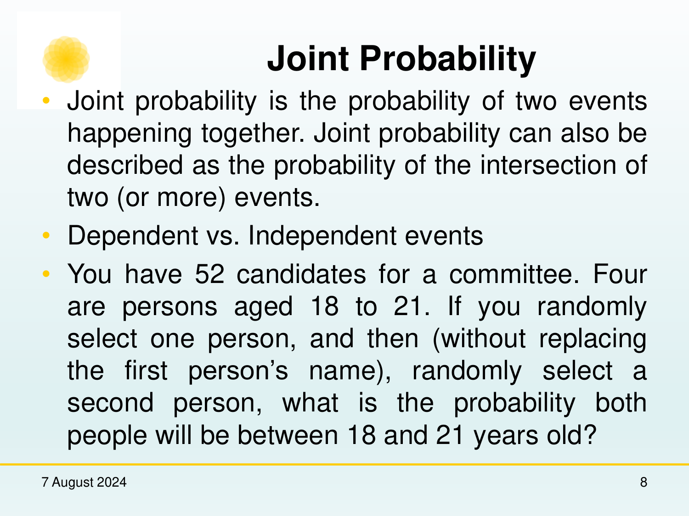
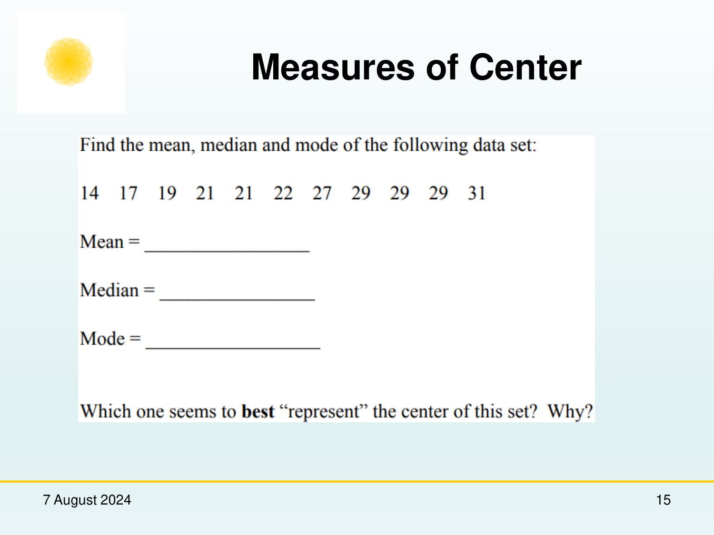
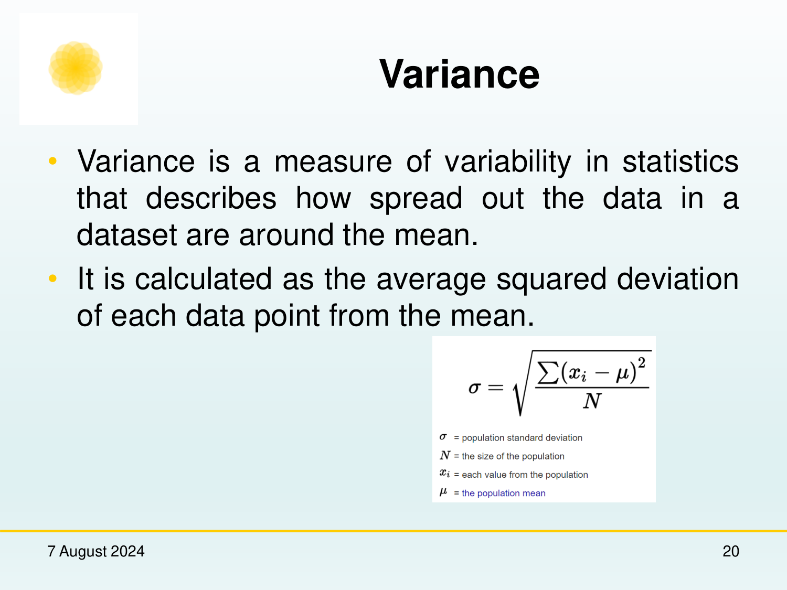
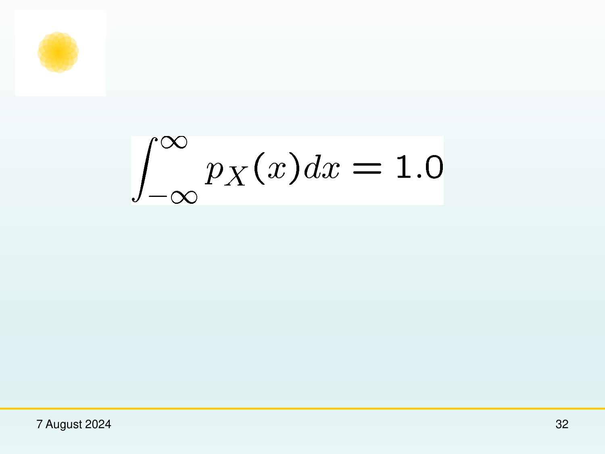
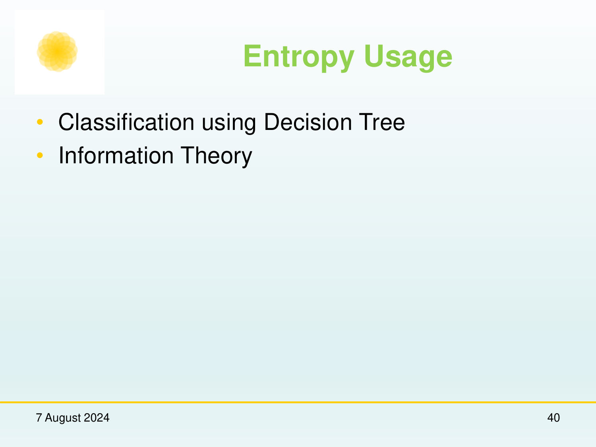

Chapter: Probability & Statistics for Machine Learning¶
Source map¶
ps4ml.pdf— primary course presentation file.
1. Introduction and Objectives¶
[Source: ps4ml.pdf, Slide 1-5]
Probability and statistics form the mathematical bedrock of machine learning, enabling models to quantify uncertainty, perform probabilistic inference, estimate parameters, and optimize decision-making under noise.



2. Law of Large Numbers (LLN)¶
[Source: ps4ml.pdf, Slide 5-12]
2.1 Theoretical Foundations¶
The Law of Large Numbers states that as the number of independent and identically distributed (i.i.d.) trials \(n\) approaches infinity, the sample average \(\bar{X}_n\) converges towards the true expected value \(\mu = \mathbb{E}[X]\).
Mathematical Statement:¶
Where: - \(\bar{X}_n = \frac{1}{n} \sum_{i=1}^n X_i\): Sample mean after \(n\) trials. - \(\mu = \mathbb{E}[X]\): Population mean (true theoretical expectation). - \(\epsilon > 0\): Arbitrarily small positive constant tolerance.


3. Probability Foundations & Distributions¶
[Source: ps4ml.pdf, Slide 13-28]
3.1 Conditional Probability & Bayes' Theorem¶
Conditional probability measures the likelihood of event \(A\) occurring given that event \(B\) has already occurred:
Bayes' Theorem Formulation:¶
Where: - \(P(A \mid B)\): Posterior probability of hypothesis \(A\) given evidence \(B\). - \(P(B \mid A)\): Likelihood of observing evidence \(B\) under hypothesis \(A\). - \(P(A)\): Prior probability of hypothesis \(A\). - \(P(B) = \sum_k P(B \mid A_k) P(A_k)\): Marginal probability of evidence \(B\) (normalizing constant).


3.2 Discrete vs. Continuous Distributions¶
flowchart TD
A[Probability Distributions] --> B[Discrete Distributions PMF]
A --> C[Continuous Distributions PDF]
B --> B1[Bernoulli: P X=x = p^x 1-p ^1-x]
B --> B2[Binomial: P X=k = n C k p^k 1-p ^n-k]
B --> B3[Poisson: P X=k = lambda^k e^-lambda / k!]
C --> C1[Gaussian / Normal Distribution]
C --> C2[Exponential Distribution]Gaussian (Normal) Distribution PDF:¶
Where \(\mu\) is the distribution mean and \(\sigma^2\) is variance.
4. Statistical Inference & Parameter Estimation¶
[Source: ps4ml.pdf, Slide 29-44]
4.1 Maximum Likelihood Estimation (MLE)¶
Given i.i.d. dataset \(\mathcal{D} = \{x^{(1)}, \dots, x^{(m)}\}\), Maximum Likelihood Estimation finds parameter vector \(\theta\) maximizing likelihood \(L(\theta) = \prod_{i=1}^m P(x^{(i)} \mid \theta)\).
Log-Likelihood Objective:¶


5. Definitions and Terms¶
Definition: Sample Space (\(\Omega\))¶
The set of all possible outcomes of a random experiment.
Definition: Law of Large Numbers¶
The probability theorem stating that the average of results obtained from a large number of independent trials converges to expected value \(\mu\).
Definition: Maximum Likelihood Estimator¶
A method of estimating parameters of an assumed probability distribution by maximizing the log-likelihood function.
6. Formula Sheet¶
| Concept | Expression |
|---|---|
| Law of Large Numbers | \(\lim_{n \to \infty} \bar{X}_n = \mu\) |
| Bayes' Theorem | \(P(A \mid B) = \frac{P(B \mid A) P(A)}{P(B)}\) |
| Gaussian PDF | \(f(x) = \frac{1}{\sqrt{2\pi\sigma^2}} e^{-\frac{(x-\mu)^2}{2\sigma^2}}\) |
| MLE Objective | \(\theta_{\text{MLE}} = \arg\max_\theta \sum_{i=1}^m \log P(x^{(i)} \mid \theta)\) |
7. Exam-Oriented Review¶
7.1 Potential Exam Questions¶
- Explain the Law of Large Numbers and its implication for sample mean estimation in Machine Learning.
-
Solution: As sample size \(n \to \infty\), the sample mean \(\bar{X}_n\) converges almost surely to true expectation \(\mu\). In ML, this guarantees empirical risk minimization converges to true risk as training dataset size grows arbitrarily large.
-
Derive Bayes' Theorem from the definition of conditional probability.
- Solution:
- By definition: \(P(A \mid B) = \frac{P(A \cap B)}{P(B)} \implies P(A \cap B) = P(A \mid B) P(B)\).
- Similarly: \(P(B \mid A) = \frac{P(A \cap B)}{P(A)} \implies P(A \cap B) = P(B \mid A) P(A)\).
- Equating both: \(P(A \mid B) P(B) = P(B \mid A) P(A) \implies P(A \mid B) = \frac{P(B \mid A) P(A)}{P(B)}\).
7.2 Numerical Problem & Step-by-Step Solution¶
Problem: Medical test for a disease has \(99\%\) sensitivity (\(P(\text{Positive} \mid \text{Disease}) = 0.99\)) and \(95\%\) specificity (\(P(\text{Negative} \mid \text{No Disease}) = 0.95\)). If disease prevalence \(P(\text{Disease}) = 0.001\), compute probability a person has disease given positive test result \(P(\text{Disease} \mid \text{Positive})\).
Solution: 1. \(P(D) = 0.001 \implies P(\neg D) = 0.999\). 2. \(P(+ \mid D) = 0.99\), \(P(+ \mid \neg D) = 1 - 0.95 = 0.05\). 3. Compute total probability of positive test \(P(+)\):
- Compute Bayes posterior \(P(D \mid +)\):